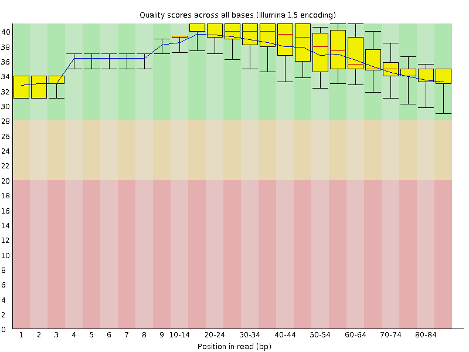
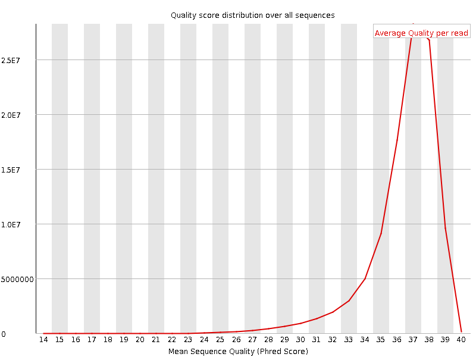
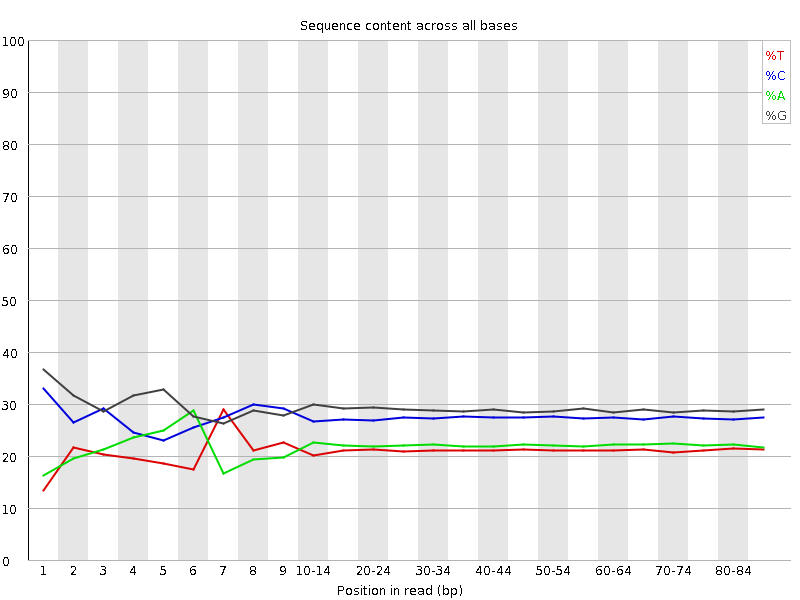
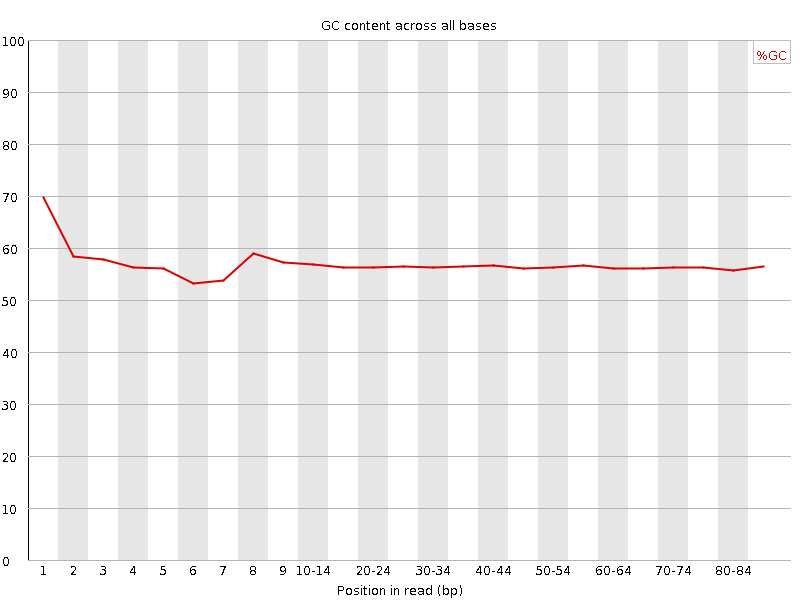
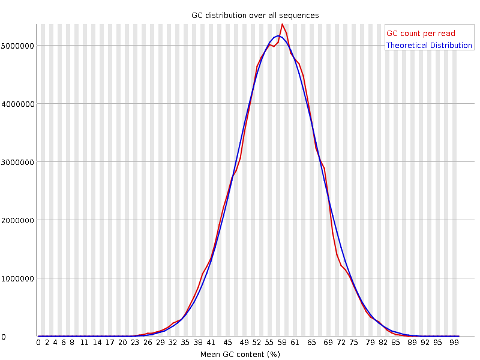
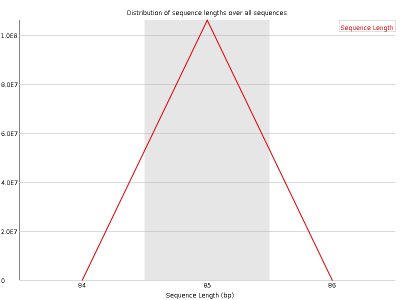
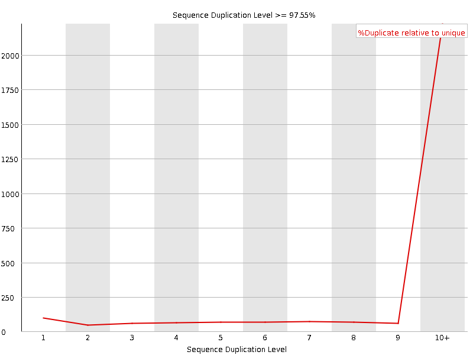
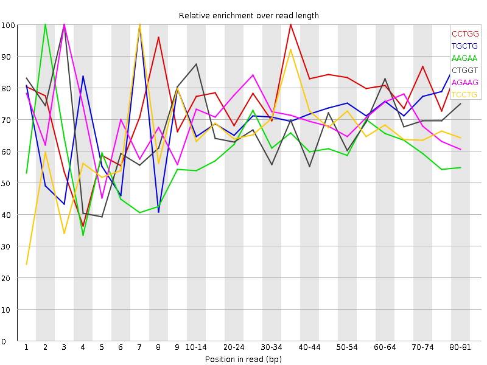

![[OK]](Icons/tick.png) Basic Statistics
Basic Statistics
| Measure | Value |
|---|---|
| Filename | SRR534291_pe_2.f.fastq |
| File type | Conventional base calls |
| Encoding | Illumina 1.5 |
| Total Sequences | 106005107 |
| Filtered Sequences | 0 |
| Sequence length | 85 |
| %GC | 56 |
Per base sequence quality

Per sequence quality scores

![[FAIL]](Icons/error.png) Per base sequence content
Per base sequence content

Per base GC content

Per sequence GC content

Per base N content

Sequence Length Distribution

Sequence Duplication Levels

![[WARN]](Icons/warning.png) Overrepresented sequences
Overrepresented sequences
| Sequence | Count | Percentage | Possible Source |
|---|---|---|---|
| GTCTTCTGACAGCTGGTGCGCCTGCCCGGGAACATCCTCCTGGACTCAAT | 327285 | 0.30874455888243196 | No Hit |
| CTTCTGACAGCTGGTGCGCCTGCCCGGGAACATCCTCCTGGACTCAATCA | 220807 | 0.20829845490368684 | No Hit |
Kmer Content

| Sequence | Count | Obs/Exp Overall | Obs/Exp Max | Max Obs/Exp Position |
|---|---|---|---|---|
| CCTGG | 44014120 | 3.7689695 | 4.8021846 | 35-39 |
| TGCTG | 33342565 | 3.7113605 | 5.191701 | 7 |
| AAGAA | 21768940 | 3.585901 | 5.889833 | 2 |
| CTGGT | 31494040 | 3.5056012 | 5.1464853 | 3 |
| AGAAG | 26499785 | 3.3210006 | 4.659745 | 3 |
| TCCTG | 27270990 | 3.2201025 | 4.7724967 | 7 |
| CTGGA | 29838495 | 3.1659741 | 4.536166 | 1 |
| TGGTG | 30131510 | 3.1616986 | 4.827448 | 4 |
| GAAGA | 24912340 | 3.122059 | 5.581614 | 2 |
| GCTGG | 36323665 | 2.9321468 | 5.218772 | 1 |
| AAGAT | 13559880 | 2.3432605 | 7.6862245 | 3 |
| AGATG | 16010445 | 2.1049106 | 5.564132 | 4 |
| TCTTC | 12812700 | 2.0861597 | 6.573821 | 2 |
| CTTCT | 12552550 | 2.0438023 | 7.1937413 | 3 |
| GAAAA | 12394085 | 2.0416226 | 5.655467 | 2 |
| TTCTG | 12437360 | 1.9089761 | 6.331172 | 4 |
| AAAAT | 7728215 | 1.7554091 | 5.3240876 | 3 |
| TGACA | 11312475 | 1.577693 | 5.0947356 | 7 |
| TCTGA | 10324665 | 1.5105827 | 5.5207705 | 5 |
| GTCTT | 7224190 | 1.1088209 | 5.7315536 | 1 |